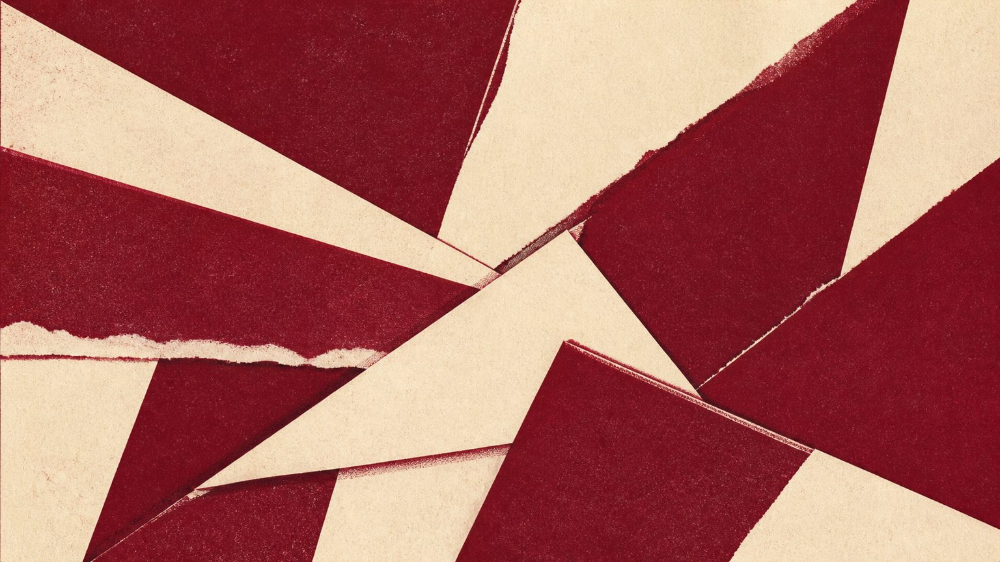
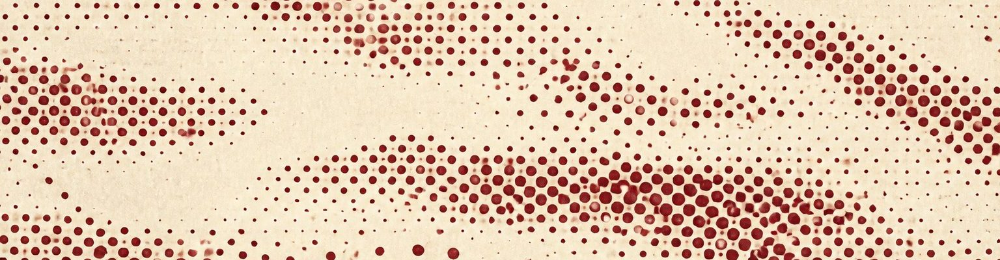

Nine artists working in paper, pressure and repetition.
Every work here was made by pressing one surface into another. That is the whole argument of the show, and it is worth saying plainly before the wall texts start reaching for larger words.
Printmaking is usually described by what it produces — the edition, the multiple, the democratic image. The nine artists in these rooms are interested in something narrower: what the press does to the paper. Fibre crushes and does not recover. Ink sits in the crushed part. A sheet run twice through a press at slightly different registrations holds both passes at once, and the misalignment is not an error in the image, it is the image.
Room 1 gathers the flattest work in the show: relief prints pulled at low pressure, where the plate barely marks the sheet. Room 2 raises the pressure until the paper deforms — Halloran's folded suites are pressed hard enough to split along the fold, and she prints the split. Room 3 abandons ink entirely. Four artists here work in blind embossing, and the works are legible only in raking light, which is why that room is lit the way it is.

Generated print — see colophonThe plate is not the work and the print is not the work. The work is what happened between them. — Ines Calloway, curator
The show does not argue that this is a new tendency. Pressure has been the medium's subject since Degas monotypes, and two of the nine artists were taught by someone taught by Hayter. What has changed is scale: the largest work in Room 2 is 2.4 metres on its long edge, pulled on a converted mangle, and it could not have been printed by hand in 1960.
Works are listed in the order they are hung, clockwise from the door of each room. Dimensions are height before width, sheet size rather than image size.
| No. | Artist | Title | Medium | Year |
|---|---|---|---|---|
| 1 | Marta Öberg | Field, unturned | Relief print on kozo, 620 × 940 | 2026 |
| 2 | Marta Öberg | Field, turned once | Relief print on kozo, 620 × 940 | 2026 |
| 3 | Jun Watanabe | Seventeen passes | Woodblock, seventeen impressions, 480 × 360 | 2025 |
| 4 | Priya Anand | Ash register | Two-ink risograph, misregistered, 420 × 594 | 2027 |
| No. | Artist | Title | Medium | Year |
|---|---|---|---|---|
| 5 | Eithne Halloran | Fold suite I–IV | Intaglio on folded rag, split at the crease, 2400 × 1100 | 2026 |
| 6 | Eithne Halloran | Mangle drawing | Pressure only, no ink, 1800 × 900 | 2027 |
| 7 | Tobias Reyn | Weight study (lead) | Lead sheet, embossed, 300 × 300 | 2024 |
| No. | Artist | Title | Medium | Year |
|---|---|---|---|---|
| 8 | Salome Ngata | Braille for nothing | Blind embossing on Somerset, 760 × 560 | 2026 |
| 9 | Collective Untitled | Room 3 | Embossed plaster, dimensions variable | 2027 |
The blind embossed works are lit at a low raking angle and the room is darker than the rest of the gallery. This is not atmosphere: at any other angle the works are invisible. Give your eyes a minute at the door.
Two works in Room 3 may be touched — they are marked at the wall. Everything else is unglazed paper, and finger oil is permanent on a blind emboss.
Guide set in the gallery's house style. Cover and Room 2 opener are generated prints made for this guide — they are not works in the exhibition and are not by any artist listed. Text by the curator; works photographed by the artists.